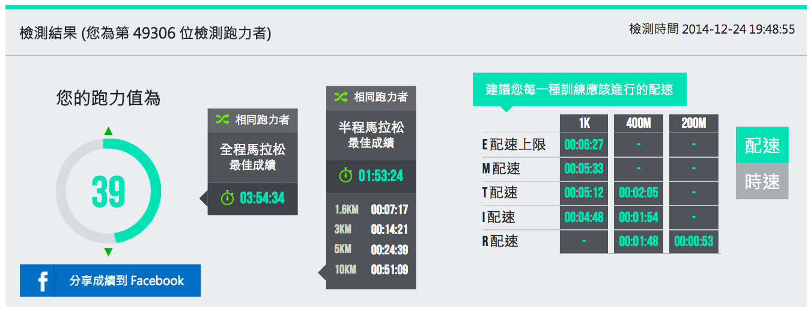

破四課表 from Run Less Run Faster
要參加波士頓馬拉松「60~64 歲的男性」與「45~49 歲的女性」要在四小時以內才能報名。
在《練少一點，跑快一點》(Run Less Run Faster，書名為我暫譯)中設計了一份破四課表，但作者先聲明，想要服用這份菜單的話，必須先符合下列其中一種能力：
- 五公里跑進 24 分 40 秒
- 十公里跑進 51 分 36 秒
- 半馬跑進 1 小時 54 分 20 秒
國峰按：等同於耐力網的「跑力 39」。上述的成績其實就是從丹尼爾斯博士的跑力表衍生出來的評估方式，可以直接在耐力網中輸入自己目前 5k、10k 或 21k 最佳成績，若跑力值是「39」的話，就具有挑戰資格了！反過來說，若跑力相差到低於「39」，就應該先把目標放在 10k 與 21k 的成績。

具有資格後，本書更進一步提出具體的訓練計畫，而且在計畫之前先聲明「要能先在一週內完成下列三種關鍵跑步課表(Key Run Workout)」才能服用他們的訓練菜單。
這三種關鍵跑步課表分別是：
【課表一：間歇跑】(任選其一，要在目標時間內完成才能符合訓練資格)
800m 乘 6，每趟之後慢跑 400m，目標：每趟要在 3 分 42 秒內完成
【課表二：節奏跑】(任選其一，要在目標時間內完成才能符合訓練資格)
跑 1 英里熱身，目標：在 24 分 39 秒內跑完 3 英里(400m 操場 12 圈)
【課表三：長跑】(任選其一，要在目標時間內完成才能符合訓練資格)
目標：以每 9:34/mile 的配速(5:58/km)至少跑 15 英里(24 公里)
如果能在一週內達到上述三個目標，你就能進行下列 16 週的訓練計畫(本書稱此計畫為 FIRST "3PLUS2" Marathon Training Program)：
FIRST Marathon Program 的每週計畫綱要如下：
- 交叉訓練課表一(Cross Training)
- 【課表一：間歇跑】
- 交叉訓練課表二
- 【課表二：節奏跑】
- 休息日
- 【課表三：長跑】
- 交叉訓練課表三，太累的話就休息
本書強調的是「用最少的訓練量達到目標」，所以它的計畫在書中又稱為「"3PLUS2" Program」，意思是一個星期只要練三次關鍵跑步課表就好了。另外，再加兩次交叉訓練，所謂交叉訓練簡單的說就是「不是跑步的訓練」，可以是游泳、騎腳踏車或肌力訓練，在本書的第五章有詳細的說明。在練交叉訓練時，有一個原則是：絕對不能影響到隔天的跑步課表。
破四訓練計畫中詳細的【課表一~三】，把英里換算成公里，也譯成中文了，如下表：
| 【關鍵課表一：間歇】 | 【關鍵課表二：節奏跑】 | 【關鍵課表三：長跑】 |
|---|
---|---|---|---
第 1 週| 10~20 分鐘熱身
3×1600m@7:40
(每趟中間休息 1 分鐘)
10 分鐘緩和跑| 總跑量 10 公里，包括：
3 公里輕鬆跑+
4 公里節奏跑@5:08/km
3 公里輕鬆跑| 21 公里 LSD@6:02/km
第 2 週| 1 英里(1600m)熱身
4×800m@3:42
(每趟中間休息 2 分鐘)
10 分鐘緩和跑| 總跑量 11.2 公里，包括：
1600m 輕鬆跑+
8 公里節奏跑@5:43/km
1600m 輕鬆跑| 24 公里 LSD@6:11/km
第 3 週| 10~20 分鐘熱身
1200m@5:39+
1000m@4:40+
800m@3:42+
600m@2:46+
400m@1:49
(每趟中間慢跑 200m)
10 分鐘緩和跑| 總跑量 11.2 公里，包括：
1600m 輕鬆跑+
8 公里節奏跑@5:39/km
1600m 輕鬆跑| 27 公里 LSD@6:11/km
第 4 週| 10~20 分鐘熱身
5×1000m@4:40
(每趟中間慢跑 400m)
10 分鐘緩和跑| 總跑量 10 公里，包括：
2 公里輕鬆跑+
6 公里節奏跑@5:18/km
2 公里輕鬆跑| 32 公里 LSD@6:20/km
第 5 週| 10~20 分鐘熱身
3×1600m@7:40
(每趟中間休息 1:00)
10 分鐘緩和跑| 總跑量 10 公里，包括：
3 公里輕鬆跑+
5 公里節奏跑@5:08/km
2 公里輕鬆跑| 29 公里 LSD@6:11/km
第 6 週| 10~20 分鐘熱身
2×1200m@5:39+
4×800m@3:42
(每趟中間慢跑 200m)
10 分鐘緩和跑| 總跑量 10 公里，包括：
2 公里輕鬆跑+
8 公里節奏跑@5:18/km| 32 公里 LSD@6:11/km
第 7 週| 10~20 分鐘熱身
6×800m@3:42
(每趟中間休息 1:30)
10 分鐘緩和跑| 總跑量 13 公里，包括：
2 公里輕鬆跑+
9 公里節奏跑@5:39/km
2 公里輕鬆跑| 21 公里 LSD@5:52/km
第 8 週| 10~20 分鐘熱身
2×(6×400m@1:49)
(兩組中間休息 2:30)
10 分鐘緩和跑| 總跑量 10 公里，包括：
3 公里輕鬆跑+
5 公里節奏跑@5:08/km
2 公里輕鬆跑| 29 公里 LSD@6:02/km
第 9 週| 10~20 分鐘熱身
1600m@7:40(400m 慢跑)+
3200m@15:40(800m 慢跑)+
2×800m@3:42
(每趟中間慢跑 400m)
10 分鐘緩和跑| 總跑量 10 公里，包括：
1.5 公里輕鬆跑+
7 公里節奏跑@5:18/km+
1.5 公里輕鬆跑| 32 公里 LSD@6:02/km
第 10 週| 10~20 分鐘熱身
3×(2×1200m@5:39)
(三組中間休息 4:00)
10 分鐘緩和跑| 總跑量 18 公里，包括：
2 公里輕鬆跑+
16 公里節奏跑@5:43/km| 24 公里 LSD@5:55/km
第 11 週| 10~20 分鐘熱身
1000m@4:40+
2000m@9:40+
1000m@4:40+
1000m@4:40
(每趟中間慢跑 400m)
10 分鐘緩和跑| 總跑量 10 公里，包括：
1.5 公里輕鬆跑+
8.5 公里節奏跑@5:18/km| 32 公里 LSD@6:02/km
第 12 週| 10~20 分鐘熱身
3×1600m@7:40
(每趟中間休息 1:00)
10 分鐘緩和跑| 總跑量 18 公里，包括：
2 公里輕鬆跑+
16 公里節奏跑@5:43/km| 24 公里 LSD@5:49/km
第 13 週| 10~20 分鐘熱身
10×400m@1:49
(每趟中間慢跑 400m)
10 分鐘緩和跑| 總跑量 13 公里，包括：
1.5 公里輕鬆跑+
11.5 公里節奏跑@5:43/km| 32 公里 LSD@5:52/km
第 14 週| 10~20 分鐘熱身
8×800m@3:42
(每趟中間休息 1:30)
10 分鐘緩和跑| 總跑量 10 公里，包括：
1.5 公里輕鬆跑+
8.5 公里節奏跑@5:18/km| 21 公里 LSD@5:43/km
第 15 週| 10~20 分鐘熱身
5×1000m@4:40
(每趟中間慢跑 400m)
10 分鐘緩和跑| 總跑量 10 公里，包括：
3 公里輕鬆跑+
5 公里節奏跑@5:08/km
2 公里輕鬆跑| 16 公里 LSD@5:43/km
第 16 週| 10~20 分鐘熱身
6×400m@1:49
(每趟中間慢跑 400m)
10 分鐘緩和跑| 總跑量 5 公里，包括：
1.5 公里輕鬆跑+
3.5 公里節奏跑@5:43/km| 波士頓馬拉松
42.195 公里@5:43/km